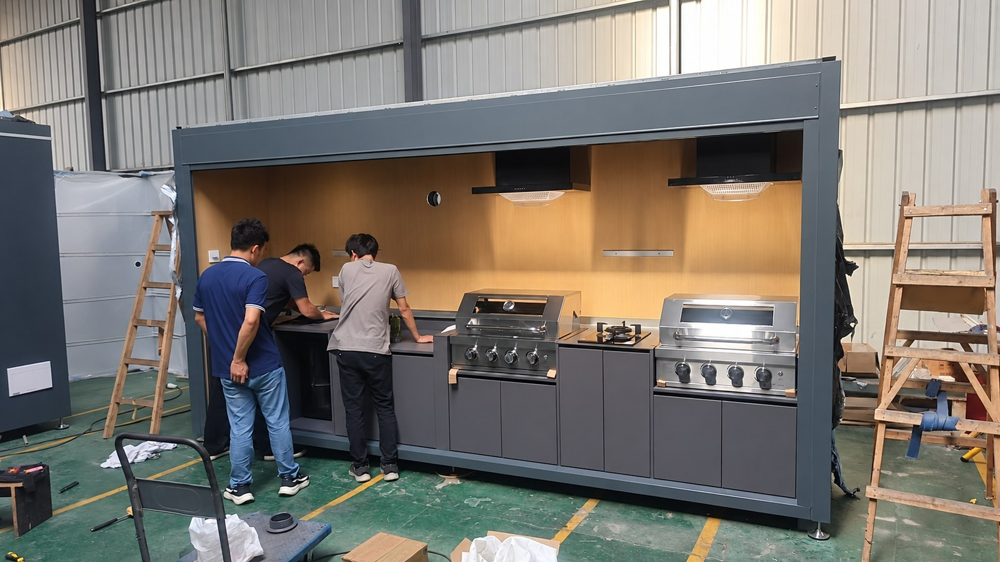

Two people
The trial used a two-person assembly team familiar with the supplied components and sequence.
A controlled PRO and MAX trial provides a useful labour-planning reference, but it is not a guarantee for every site or configuration.
KAISTEEL recorded trial assemblies of PRO and MAX modular units using two people and approximately four hours per unit under controlled factory conditions. The record supports preliminary labour planning only; the approved drawings, BOM, issued assembly guide and actual site conditions control execution.
The trial used a two-person assembly team familiar with the supplied components and sequence.
The reference is per unit under the recorded trial conditions and is not a fixed installation promise.

Structural sections, cabinetry, finish panels, worktop and approved components can be assembled against controlled drawings and a defined sequence.
The recorded crew and time provide a starting point for labour and access planning before a modular shipment is approved.
The issued guide, approved BOM, drawings, packing list and configuration-specific instructions govern the supplied unit.
| Variable | Why the site result can differ |
|---|---|
| Unloading and access | Container position, doorway clearance, travel path, lifting equipment and package handling are site-specific. |
| Crew capability | Installer familiarity, supervision, tools and local safe-working requirements affect duration. |
| Configuration | Appliance scope, lift mechanisms, finishes, worktops, optional components and interface details vary by approved BOM. |
| Foundations and utilities | Base preparation, anchoring, gas, electrical, water, drainage and local commissioning are not included in the recorded factory assembly time. |
| Weather and regulation | Outdoor conditions, permits, inspections and licensed-trade requirements can change the site programme. |
Send the destination, model, delivery format, site access, local crew capability and appliance market.
Request an assembly validation review